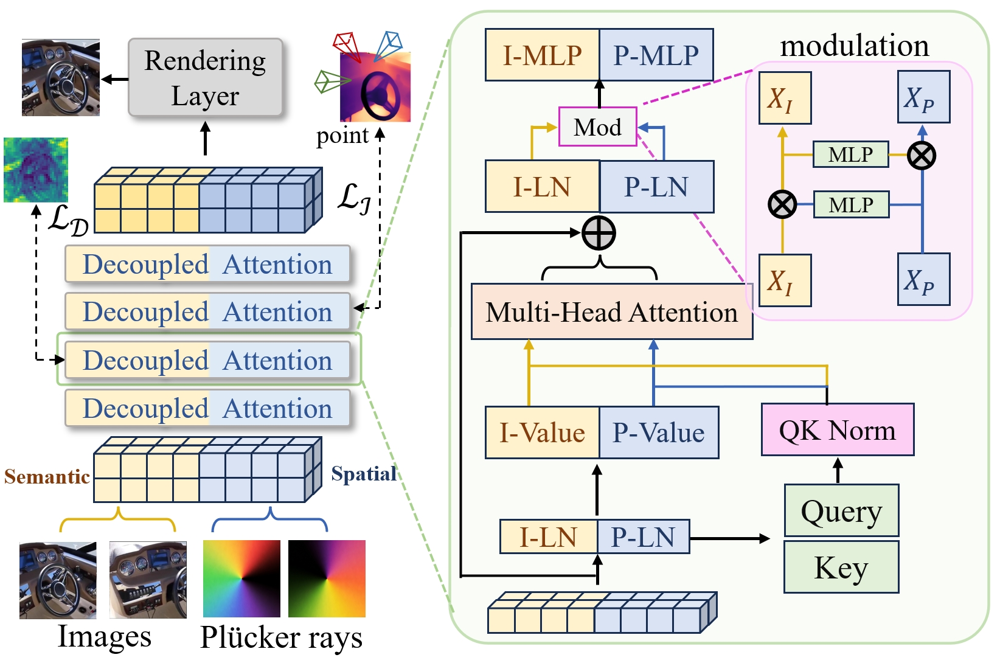
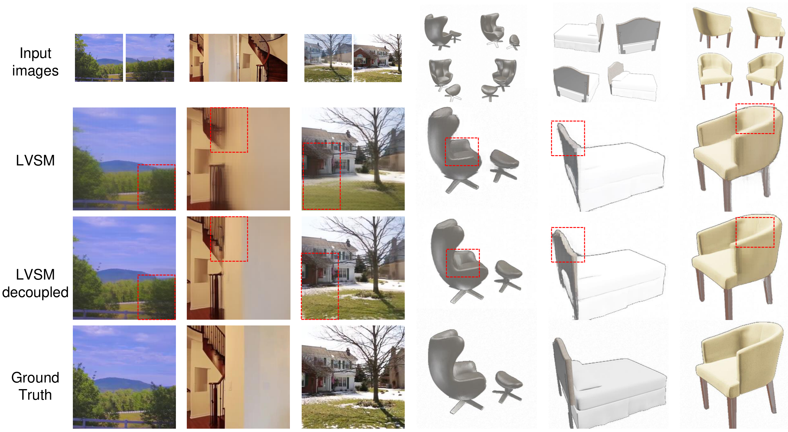

Semantic branch
Preserves appearance structure and can receive DINOv3/iREPA supervision during training.
Feedforward novel view synthesis
A semantic-spatial branch design for reducing representation ambiguity between RGB appearance and Plucker-ray geometry.
Abstract
Existing feedforward NVS transformers often project RGB patches and Plucker rays into one latent stream, which can mix appearance semantics with camera-space geometry. Our design keeps semantic and spatial tokens explicit, shares Q/K attention routing for coordination, and uses branch-specific value updates so each branch can evolve without collapsing into a single ambiguous representation.
Method
The architecture preserves the compact feedforward inference path while giving appearance and geometry separate feature-update channels. Training-only supervision and lightweight modulation can be enabled for the full variant without changing the core decoupled token interface.

Preserves appearance structure and can receive DINOv3/iREPA supervision during training.
Maintains camera-dependent geometric patterns and can receive DA3-derived consistency signals.
The base decoupled design keeps token width fixed and stays close to the original inference path.
Controlled Results
Baselines and decoupled variants use the same codebase, data split, view sampling, 256x256 resolution, 50K-step schedule, and training budget. The numbers isolate the effect of decoupling under a controlled reimplementation setting.
| Architecture | Dataset | Model | PSNR up | SSIM up | LPIPS down |
|---|---|---|---|---|---|
| Decoder-only | RE10K | Baseline | 26.10 | 0.839 | 0.144 |
| Decoder-only | RE10K | Ours (full) | 27.21 | 0.869 | 0.125 |
| Decoder-only | Objaverse | Baseline | 23.75 | 0.864 | 0.150 |
| Decoder-only | Objaverse | Ours (full) | 26.46 | 0.899 | 0.101 |
| Encoder-decoder | RE10K | Baseline | 24.06 | 0.775 | 0.206 |
| Encoder-decoder | RE10K | Ours (full) | 25.31 | 0.806 | 0.154 |
Demo Page Template
This section adapts the uploaded demo-page template into the project site as a compact video viewer. It is ready for rendered result clips; missing media paths are shown as placeholders until the files are added.
assets/demo/representation-analysis.mp4 to activate this slot.
Qualitative Snapshot
The static page keeps one qualitative image as a quick preview. Additional feature maps and comparisons are intentionally left for rendered videos in the demo viewer.
